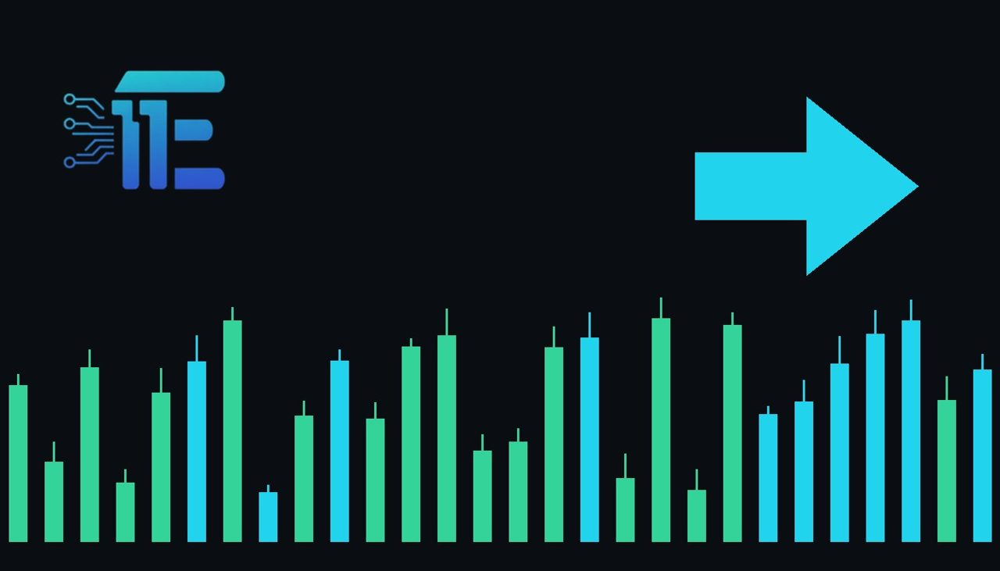

Mining Equities Tumble Following Broad Freedom Broker Downgradesភាគហ៊ុនក្រុមហ៊ុនរុករករ៉ែមាសធ្លាក់ចុះបន្ទាប់ពីការកាត់បន្ថយចំណាត់ថ្នាក់ពី Freedom Broker
XAU/USD impact: ◆ Mixedផលប៉ះពាល់លើ XAU/USD: ◆ ចម្រុះ

Mining equities tumbled after Freedom Broker issued a sweeping set of downgrades across North America's top gold producers. The analyst actions took a toll on market sentiment, sending shares of major mining companies lower during morning trading.
ភាគហ៊ុនក្រុមហ៊ុនរុករករ៉ែមាសបានធ្លាក់ចុះបន្ទាប់ពីក្រុមហ៊ុន Freedom Broker បានកាត់បន្ថយចំណាត់ថ្នាក់លើក្រុមហ៊ុនផលិតមាសធំៗនៅអាមេរិកខាងជើង។ សកម្មភាពវិភាគនេះបានជះឥទ្ធិពលដល់អារម្មណ៍ទីផ្សារ និងធ្វើឱ្យតម្លៃភាគហ៊ុនរបស់ក្រុមហ៊ុនធំៗធ្លាក់ចុះក្នុងអំឡុងពេលជួញដូរពេលព្រឹក។
Mining equities tumbled on Thursday after Freedom Broker issued a sweeping set of downgrades across North America's top gold producers. The analyst actions cited trimmed near-term EBITDA forecasts, lingering operational risks, and valuation constraints. This broad-based analyst action took a direct toll on overall market sentiment across the mining sector.
ភាគហ៊ុនក្រុមហ៊ុនរុករករ៉ែមាសបានធ្លាក់ចុះកាលពីថ្ងៃព្រហស្បតិ៍ បន្ទាប់ពីក្រុមហ៊ុន Freedom Broker បានចេញផ្សាយការកាត់បន្ថយចំណាត់ថ្នាក់ជាទូទៅចំពោះក្រុមហ៊ុនផលិតមាសជួរមុខនៅអាមេរិកខាងជើង។ ការវាយតម្លៃរបស់ក្រុមអ្នកវិភាគបានលើកឡើងពីការព្យាករប្រាក់ចំណុនមុនការទូទាត់ប្រាក់កម្ចីរយៈពេលខ្លីដែលបានធ្លាក់ចុះ ហានិភ័យប្រតិបត្តិការដែលនៅសេសសល់ និងបញ្ហាប្រឈមលើការវាយតម្លៃតម្លៃ។ សកម្មភាពវិភាគទូលំទូលាយនេះបានជះឥទ្ធិពលផ្ទាល់ដល់អារម្មណ៍ទីផ្សាររួមនៅក្នុងវិស័យរុករករ៉ែមាស។
During morning trading, the negative sentiment sent shares of Agnico Eagle Mines Limited down 5.2%, Barrick Mining Corp lower by 5.1%, and Newmont Corporation down 4.1%. Additional reports highlighted a 5.7% drop for Barrick specifically as Freedom Broker cut the stock to Hold from Buy and lowered its price target to $46 from $54.
ក្នុងអំឡុងពេលជួញដូរពេលព្រឹក អារម្មណ៍អវិជ្ជមានបានធ្វើឱ្យភាគហ៊ុនរបស់ក្រុមហ៊ុន Agnico Eagle Mines Limited ធ្លាក់ចុះ 5.2 ភាគរយ ក្រុមហ៊ុន Barrick Mining Corp ធ្លាក់ចុះ 5.1 ភាគរយ និងក្រុមហ៊ុន Newmont Corporation ធ្លាក់ចុះ 4.1 ភាគរយ។ របាយការណ៍បន្ថែមបានគូសបញ្ជាក់ពីការធ្លាក់ចុះ 5.7 ភាគរយសម្រាប់ក្រុមហ៊ុន Barrick ជាពិសេស បន្ទាប់ពី Freedom Broker បានកាត់បន្ថយភាគហ៊ុននេះមកត្រឹមស្ថានភាពរក្សាទុកពីកម្រិតទិញ និងបានកាត់បន្ថយគោលដៅតម្លៃមកត្រឹម 46 ដុល្លារពីកម្រិត 54 ដុល្លារ។
While equity performance in mining stocks does not directly dictate the spot price of physical bullion, shifts in producer valuations and sector sentiment influence broader capital flows into precious metals. When mining shares experience heavy selling pressure, it can sometimes reflect or induce broader caution among institutional investors holding gold-linked instruments.
(spot price) នៃដុំមាសរូបវន្តនោះទេ ការផ្លាស់ប្តូរតម្លៃនៃការវាយតម្លៃក្រុមហ៊ុនផលិត និងអារម្មណ៍វិស័យអាចមានឥទ្ធិពលលើលំហូរទុនទូទៅទៅក្នុងទ្រព្យសកម្មដ៏មានតម្លៃ។ នៅពេលដែលភាគហ៊ុនរុករករ៉ែមាសជួបប្រទះសម្ពាធនៃការលក់យ៉ាងខ្លាំង ឬបង្កឱ្យមានការប្រុងប្រយ័ត្នទូទៅក្នុងចំណោមអ្នកវិនិយោគស្ថាប័នដែលកាន់កាប់ឧបករណ៍ដែលភ្ជាប់នឹងមាស។
A balanced view suggests that equity downgrades and squeezed operating margins driven by elevated costs could pressure broader market enthusiasm for gold assets if investor confidence wanes. Conversely, underlying bullion demand often remains resilient if macroeconomic uncertainties persist, independent of individual mining corporate valuations.
ទស្សនៈមានតុល្យភាពបង្ហាញថា ការកាត់បន្ថយចំណាត់ថ្នាក់ភាគហ៊ុន និងរឹមប្រតិបត្តិការដែលត្រូវរឹតបន្តឹងដោយសារការចំណាយខ្ពស់ អាចដាក់សម្ពាធដល់ភាពរីករាយរបស់ទីផ្សារទូទៅចំពោះទ្រព្យសកម្មមាស ប្រសិនបើទំនុកចិត្តរបស់អ្នកវិនិយោគធ្លាក់ចុះ។ ផ្ទុយទៅវិញ ដោយមិនអាស្រ័យលើការវាយតម្លៃសាជីវកម្មរុករករ៉ែមាសនីមួយៗនោះទេ។
Traders should monitor broader equity market sentiment, upcoming corporate earnings reports from major producers, and broader macroeconomic indicators that influence both mining sector profitability and spot bullion demand.
អ្នកជួញដូរគួរតែតាមដានអារម្មណ៍ទីផ្សារភាគហ៊ុនទូទៅ របាយការណ៍ប្រាក់ចំណូលសាជីវកម្មនាពេលខាងមុខពីក្រុមហ៊ុនផលិតធំៗ និងសូចនាករម៉ាក្រូសេដ្ឋកិច្ច ευר более ដែលមានឥទ្ធិពលទាំងលើភាពចំណេញរបស់វិស័យរុករករ៉ែមាស
Key takeawaysចំណុចសំខាន់ៗ
- Freedom Broker issued a sweeping set of downgrades across top North American gold producers.
- Freedom Broker បានកាត់បន្ថយចំណាត់ថ្នាក់លើក្រុមហ៊ុនផលិតមាសធំៗនៅអាមេរិកខាងជើង។
- Agnico Eagle, Barrick Mining, and Newmont Corporation saw significant share price declines during morning trading.
- ក្រុមហ៊ុន Agnico Eagle, Barrick Mining និង Newmont Corporation បានជួបប្រទះការធ្លាក់ចុះតម្លៃភាគហ៊ុនយ៉ាងខ្លាំងក្នុងពេលជួញដូរពេលព្រឹក។
- Analysts cited trimmed near-term EBITDA forecasts, valuation constraints, and lingering operational risks.
- អ្នកវិភាគបានដកស្រង់ការព្យាករប្រាក់ចំណូលរយៈពេលខ្លីដែលបានធ្លាក់ចុះ និងហានិភ័យប្រតិបត្តិការជាហេតុផលចម្បង។
Original commentary by THE MARKET CODE, based on public reporting from Yahoo! Finance: GC=F News. Written with the help of AI. Educational only, not financial advice.
មតិវិភាគដើមដោយ THE MARKET CODE ផ្អែកលើការរាយការណ៍សាធារណៈពី Yahoo! Finance: GC=F News។ សរសេរដោយមានជំនួយពី AI។ មាតិកាអប់រំប៉ុណ្ណោះ មិនមែនជាដំបូន្មានហិរញ្ញវត្ថុទេ។